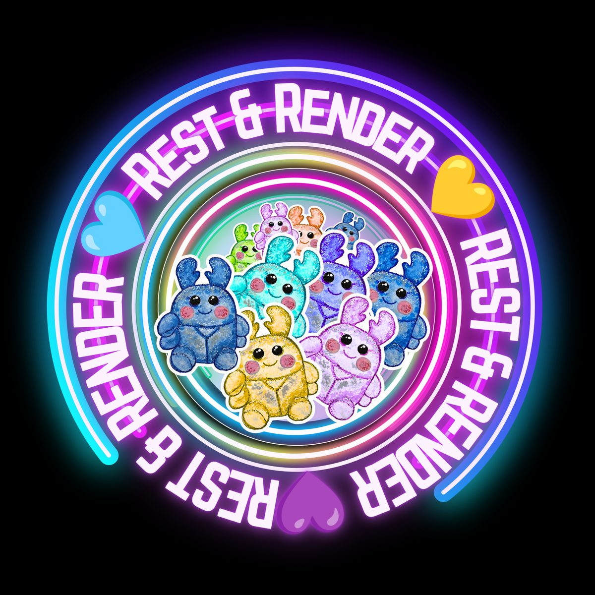
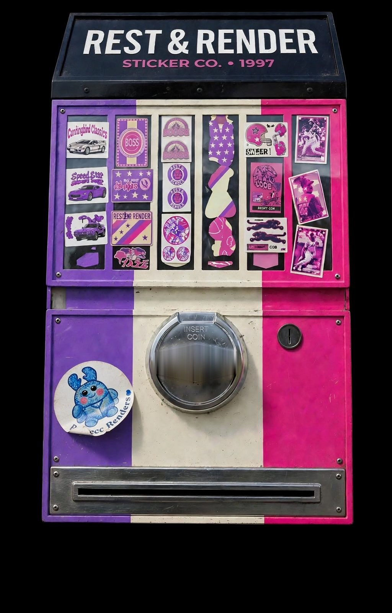
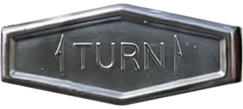

Rest & Render · printed in Texas
Some of these are too good to stick anywhere.
Hand-drawn stickers and cards on real paper — the kind you keep in a drawer because they're too nice to use.
Take a look
There's a machine in here
Start with something small
Three ways in. Everything else is further down, behind a glass window.
- Stickers Sheets and singles Halloween, succulents, and the ones you'll hoard instead of use. Look →
- Cards For someone specific Greeting cards for the people who keep every note you've ever written. Look →
- Made for you Your idea, drawn Send the picture in your head. It comes back on paper in a few weeks. Start here →
Behind the glass
Turn the crank.
Scroll to turn the handle


One deal at a time
Right now it's the Halloween sheet.
When a sheet sells out it stays on the shelf so you can see what you missed. Then a different deal takes its place.
Have something in mind?
Custom work is drawn to order and paid upfront, so nobody is drawing into a maybe.
- Send the idea, a reference, or a very bad drawing.
- You get up to three directions to choose from.
- Two to four weeks from yes to paper.